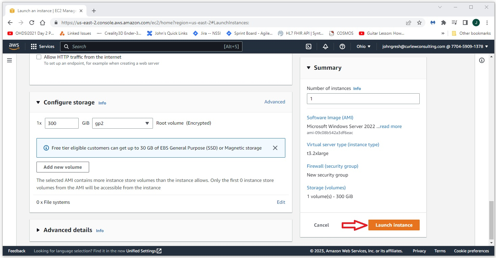
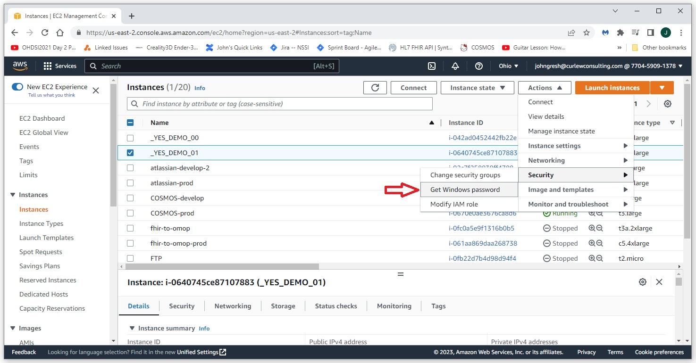
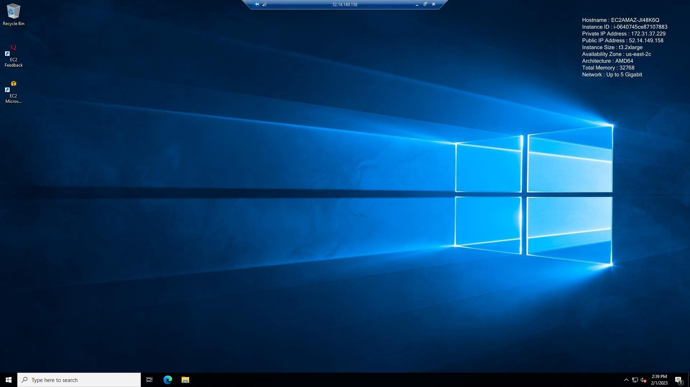

Ponos Quick Start Guide: Creating an AWS EC2 Instance to Host Atlas
Introduction
This page shows how to create an AWS EC2 instance that can be used as a host for the automated build of the Atlas development environment.
The AWS EC2 instance is used as an example here to demonstrate the installation is complete and can be run on a new untouched Windows machine.
The Ponos standardized automated installation can be run on any modern Windows machine.
This guide assumes you have an AWS account and can navigate to the EC2 page.
Create an AWS EC2 Instance to Host Atlas
Login to you AWS account and navigate to the EC2 page. Select Launch Instances.

Configure your new instance:
-
Give it a name, here we are using _YES_DEMO_01
-
Select Windows. For this example we are using Microsoft Windows Server 2022 Base
-
Select your instance type. For this example we are using t3.2xlarge
-
Select or create a key pair.
-
Set your network preferences. For this example we are limiting access to my current IP for RDP.
-
INCREASE DEFAULT STORAGE SIZE: The default is 30G, this isn't enough. For this example we are increasing the storage size to 300G.
-
After you've set your configuration, select Launch Instance. Go get coffee, it will take about 5 minutes before the new instance is ready.
Select Actions->Security->Get Windows password to use your key file to create a password for the Administrator account.
Copy and save the password to a safe place.

Get the Public IPv4 address for your instance from the EC2.
Launch Remote Desktop Connection and use the IP address and the password you created for the Administrator account to launch a connection to your new machine.
